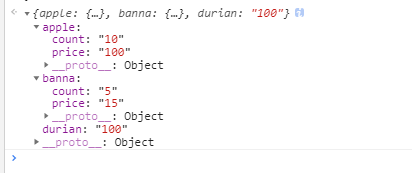
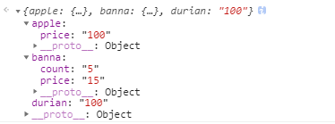

# JavaScript对象之深拷贝和浅拷贝
最开始意识到深拷贝的重要性是在我对对象进行合并的时候。例如：
var fruit = {
apple: {
count: '10',
price: '20'
},
banna: {
count: '5',
price: '15'
},
durian: '100'
}
var fruit1 = {
apple: {
price: '100'
}
}
Object.assign(fruit, fruit1)
我期望的值

实际获取的值

这，就是我和深浅拷贝的第一次相遇。如果你对拷贝原理理解的不透彻，此文或许能提供一点帮助。
# javascript数据类型
# 基本数据类型
string、number、null、undefined、boolean、symbol（ES6 新增的原始数据类型，表示独一无二的值）变量值存放在栈内存中，可直接访问和修改变量的值。基本数据类型不存在拷贝，例如：你无法修改数值1的值
# 引用类型
Object Array 值为对象，存放在堆内存中，在栈内存中变量保存的是一个指针，指向对应在堆内存中的地址。当访问引用类型的时候，要先从栈中取出该对象的地址指针，然后再从堆内存中取得所需的数据。
# 深拷贝和浅拷贝的区别
浅拷贝：将原对象或原数组的引用直接赋给新对象，新数组，新对象／数组只是原对象的一个引用
深拷贝：创建一个新的对象和数组，将原对象的各项属性的“值”（数组的所有元素）拷贝过来，是“值”而不是“引用”
# 浅拷贝
回到文章开始的问题，为什么拷贝的数据对象和期望的值不一样呢，这里就涉及到你用的‘拷贝’其实本质上是一种浅拷贝（只对第一层级做拷贝）。针对这个问题可以发现，对于对象的第一层级，我们是拷贝了对象属性的值；但是当对象的属性值是引用类型的时候，我们拷贝了对象的引用值。
同理：针对Array数据的concat、slice也是一种浅拷贝（只对第一层级做拷贝）
补充：对引用类型数据直接复制的操作同样是浅拷贝（这里就不做进一步的说明了）
# 只对第一层级做拷贝
# 1.直接遍历
var array = [1, 2, 3, 4];
function copy (obj) {
let obj1 = {}
if (Array.isArray(obj)) {
obj1 = []
}
for(let key in array) {
obj1[key] = obj[key]
}
return obj1;
}
var copyArray = copy(array);
copyArray[0] = 100;
console.log(array); // [1, 2, 3, 4]
console.log(copyArray); // [100, 2, 3, 4]
# 2. array.slice()
var array = [1, 2, 3, 4];
var copyArray = array.slice();
copyArray[0] = 100;
console.log(array); // [1, 2, 3, 4]
console.log(copyArray); // [100, 2, 3, 4]
slice() 方法返回一个从已有的数组中截取一部分元素片段组成的新数组（不改变原来的数组！）
用法：array．slice(start,end) start表示是起始元素的下标，end表示的是终止元素的下标。当slice()不带任何参数的时候，默认返回一个长度和原数组相同的新数组
# 3. array.concat()
var array = [1, 2, 3, 4];
var copyArray = array.concat();
copyArray[0] = 100;
console.log(array); // [1, 2, 3, 4]
console.log(copyArray); // [100, 2, 3, 4]
concat() 方法用于连接两个或多个数组。( 该方法不会改变现有的数组，而仅仅会返回被连接数组的一个副本。)
用法：array.concat(array1,array2,…,arrayN)
因为我们上面调用concat的时候没有带上参数，所以var copyArray = array.concat();实际上相当于var copyArray = array.concat([]);也即把返回数组和一个空数组合并后返回
# 4. Object.assign()
见文章开头的示例
assign() 方法用来将源对象（source）的所有可枚举属性，复制到目标对象（target）。它至少需要两个对象作为参数，第一个参数是目标对象，后面的参数都是源对象。
用法： Object.assign(target, source1, source2); 所以 copyObj = Object.assign({}, obj); 这段代码将会把obj中的一级属性都拷贝到 ｛｝中，然后将其返回赋给copyObj
# 深拷贝
有没有更强大一些的解决方案呢？使得我们能够
- 不仅拷贝第一层级，还能够拷贝数组或对象所有层级的各项值
- 不是单独针对数组或对象，而是能够通用于数组，对象和其他复杂的JSON形式的对象
# JSON.parse(JSON.stringify(XXXX))
var array = [
{ number: 1 },
{ number: 2 },
{ number: 3 }
];
var copyArray = JSON.parse(JSON.stringify(array))
copyArray[0].number = 100;
console.log(array); // [{number: 1}, { number: 2 }, { number: 3 }]
console.log(copyArray); // [{number: 100}, { number: 2 }, { number: 3 }]
缺点：不能拷贝除Object、Array以外的对象类型
# Jquery.extend()
var array = [
{ number: 1 },
{ number: 2 },
{ number: 3 }
];
var copyArray = $.extent(true, {}, array)
copyArray[0].number = 100;
console.log(array); // [{number: 1}, { number: 2 }, { number: 3 }]
console.log(copyArray); // [{number: 100}, { number: 2 }, { number: 3 }]
# 自己写递归
deepObjAssign = function(obj) {
if (obj == null) {
throw new TypeError('Cannot convert undefined or null to object')
} else {
let target = Array.isArray(obj) ? [] : {}, a = '[object Array]', o = '[object Object]'
for (var key in obj) {
if (Object.prototype.hasOwnProperty.call(obj, key)) {
let t = Object.prototype.toString.call(obj[key])
if (t === a || t === o) {
target[key] = deepObjAssign(obj[key])
continue
}
}
target[key] = obj[key]
}
return target
}
}
# demo
Object.assign = Object.assign || function(target) {
if (target == null) {
throw new TypeError('Cannot convert undefined or null to object')
} else {
target = Object(target)
for (var i = 1; i < arguments.length; i++) {
var source = arguments[index]
if (source != null) {
for (var key in source) {
if (Object.prototype.hasOwnProperty.call(source, key)) {
target[key] = source[key]
}
}
}
}
return target
}
}
var deepObjAssign = function(target, source) {
let a = '[object Array]', o = '[object Object]'
for (var key in source) {
if (Object.prototype.hasOwnProperty.call(source, key)) {
let val = target[key]
if (val) {
let t = Object.prototype.toString.call(val)
if (t === a || t === o) {
t = Object.prototype.toString.call(source[key])
if (t === a || t === o) {
deepObjAssign(val, source[key])
continue
}
}
}
target[key] = source[key]
}
}
return target
}
// 深合并
Object.assignDeep = function (target) {
if (target == null) {
throw new TypeError('Cannot convert undefined or null to object')
} else{
target = Object(target)
for (var i = 1; i < arguments.length; i++) {
var source = arguments[i]
if (source != null) {
target = deepObjAssign(target, source)
}
}
return target
}
}
// 深拷贝
Object.copy = function(obj) {
if (obj == null) {
throw new TypeError('Cannot convert undefined or null to object')
} else {
let target = Array.isArray(obj) ? [] : {}, a = '[object Array]', o = '[object Object]'
for (var key in obj) {
if (Object.prototype.hasOwnProperty.call(obj, key)) {
let t = Object.prototype.toString.call(obj[key])
if (t === a || t === o) {
target[key] = deepObjAssign(obj[key])
continue
}
}
target[key] = obj[key]
}
return target
}
}
https://juejin.im/post/5e96acf3f265da47c8013528
文章来源：https://blog.csdn.net/qq_32462903/article/details/105841395?utm_medium=distribute.pc_feed.215691&depth_1-utm_source=distribute.pc_feed.215691